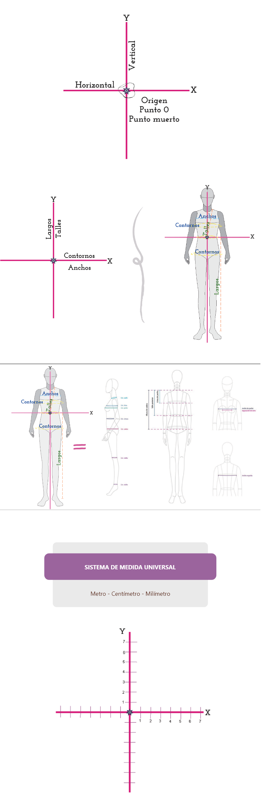
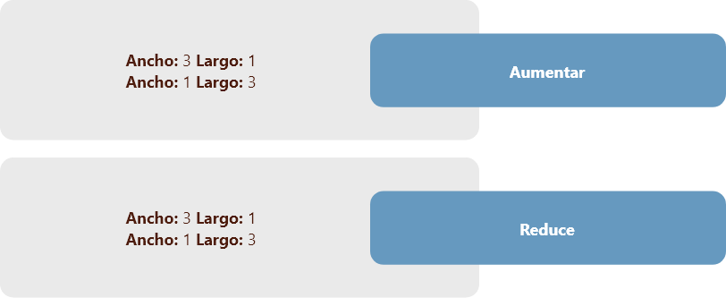
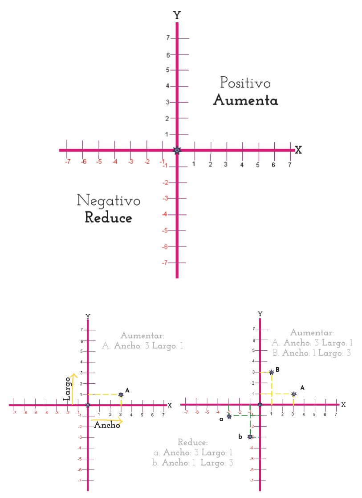
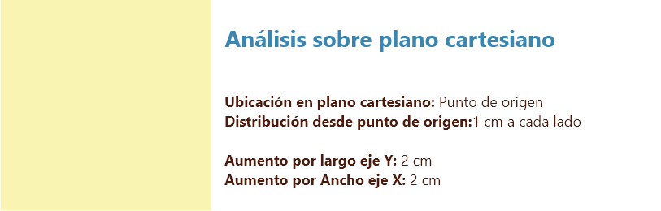
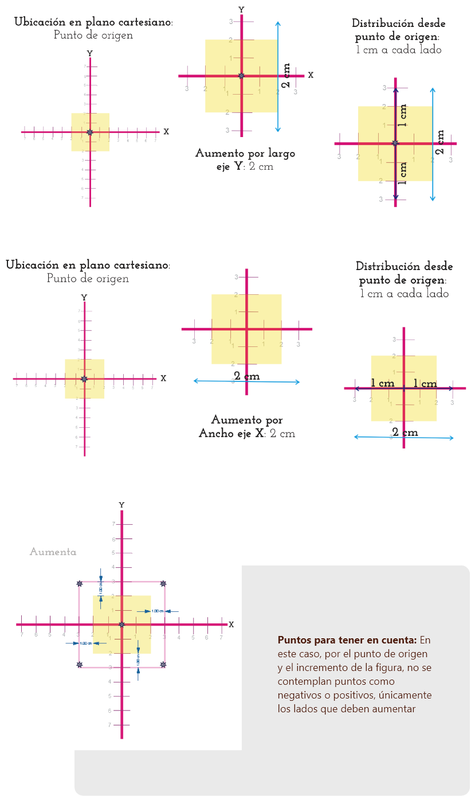
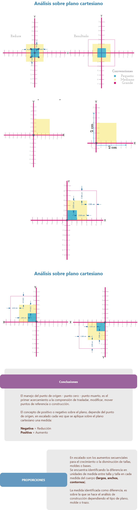
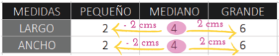
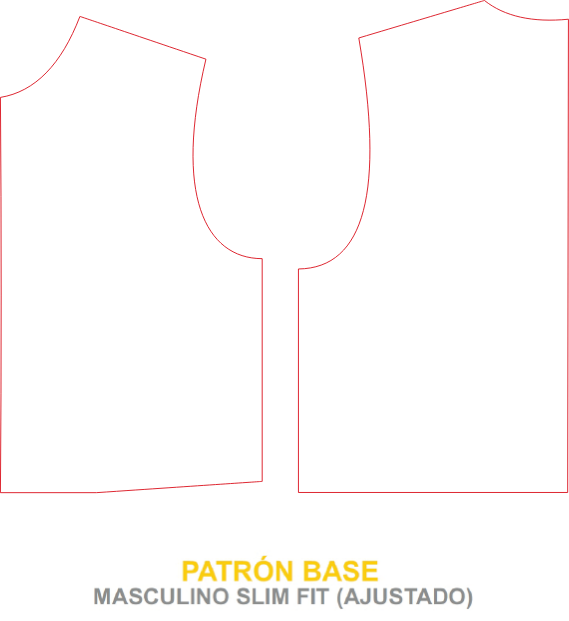
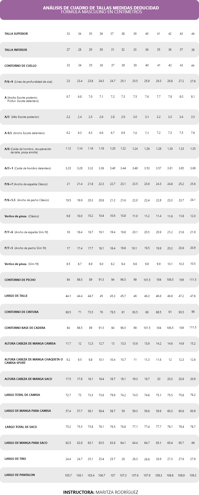

Introducción
1. Escalado manual de prendas
Introducción y contextualización - escalado
¿Qué es el escalado?
Es el método o técnica implementado para ampliar o reducir un patrón base, molde o trazo de una talla a otra proporcionalmente.
Las proporciones se identifican de acuerdo al cuadro de tallas o medidas estandarizadas.
Para llevar a cabo un escalado, se implementan planos cartesianos que permiten identificar puntos de referencia, en las medidas de largos, anchos y contornos con sus proporciones que se diferencian entre una talla y otra.
Plano cartesiano
Está formado por dos rectas perpendiculares, una horizontal y otra vertical que se entrecruzan en un punto.
La recta horizontal es llamada eje de las abscisas o de las equis (x)
La recta vertical, eje de las ordenadas o de las yes, (y)
El punto donde se cortan recibe el nombre de origen (Punto cero o Punto muerto).
El plano cartesiano tiene como finalidad describir la posición de puntos, los cuales se representan por sus coordenadas o pares ordenados.
Para la implementación del plano cartesiano trabajaremos con el sistema de medidas de mayor dominio
Ejemplo
Si tomamos como punto de partida el punto de origen al hablar de reducir o aumentar podríamos acudir a los espacios negativos o Positivos del plano cartesiano.
Ejemplo
Para entender cómo funciona el escalado desde plano cartesiano vamos a tomar como referencia un cuadrado.
Este cuadro es el molde base o talla base a trabajar.
De este cuadrado deben salir 2 figuras más para un total de 3 figuras, siendo este el punto intermedio.
La diferencia en Ancho es de 2cm.
La diferencia en Largo es de 2cm.
Se debe sacar 1 cuadrado más pequeño y 1 cuadrado más grande. Recuerde que todos los lados del cuadrado deben quedar iguales.
Ejemplo
Para identificar las proporciones a aplicar, se debe trabajar con las siguientes medidas.
En este caso el punto base o el punto de partida es el Mediano la diferencia entre medida y medida es de 2 cm para aumentar y -2 cm para reducir.
Para aplicar en escalado se trabaja no con la diferencia, si no con las proporciones.
Cómo identificar las proporciones
Si la diferencia entre una medida y otra es de 2cm.
La proporción, equivale a la manera en la que se aplica en el plano, es decir:

Si sobre el plano se aplica la medida completa, dicha medida equivale a 1 proporción 1 proporción será 2 cm.
Si sobre el plano se aplica la mitad de la medida, esto equivale a 1/2 proporción 1/2 proporción será 1 cm.
Ejercicio de análisis
Realice el escalado de la siguiente figura, teniendo en cuenta:
El cuadro de tallas asignado.
La talla base y las medidas.
Las diferencias entre talla y talla.
La asignación de proporciones, según tipo de plano a trabajar.
El punto de origen sobre el plano cartesiano y la ubicación de la figura.
El cuadro de tallas asignado.
La talla base y las medidas.
Las diferencias entre talla y talla.
El cuadro de tallas asignado.
La talla base y las medidas.
Las diferencias entre talla y talla.

Asignación de proporciones, Plano por mitad.
En este caso que el punto de origen está en un punto que divide el largo total.
Se debe tomar la proporción y aplicar mitad hacia arriba - mitad hacia abajo para el largo total y no perder la proporción de la figura.
En este caso que el punto de origen está en un punto base de construcción.
se debe tomar la proporción y aplicar toda hacia arriba para largo total y no perder la proporción de la figura.
Sin embargo, debe tener en cuenta el vértice A.B modifica a su altura, para no perder la proporción de la figura.
Ejercicios de elaboración
Teniendo en cuenta el ejercicio de análisis y sus respectivas explicaciones, realice el escalado de la figura en todas las tallas, con los 2 puntos de origen propuestos en la explicación anterior.
Para poder realizar dicha actividad necesita:
Lápiz.
Lápices de colores.
Papel.
Reglas en cm.
1.1 Escalado de falda
Cuando se va a iniciar con el proceso de escalado, se debe tener en cuenta referencias como cuadros de tallas, metodología y lógica de construcción, pieza o molde que se va escalar, es decir en este caso se hace referencia a una base inferior de falda, quiere decir un molde que no tiene margen de costura, ni es una prenda, se trabajará el escalado de una base en las diferentes tallas, de igual manera se debe tener en cuenta el tipo de escalado que se va a trabajar, los aumentos y disminuciones por talla.
Hacer el análisis del cuadro de tallas.
Hacer el análisis de diferencia por talla e identificar la medida aplicar en el escalado.
Hacer el análisis de los puntos de escalado que se van a referenciar o modificar.
1.2 Escalado de base con pinzas - superior
Cuando se va a iniciar con el proceso de escalado, se debe tener en cuenta referencias como cuadros de tallas, metodología y lógica de construcción, pieza o molde que se va escalar, es decir en este caso se hace referencia a una base superior femenina con pinzas, quiere decir un molde que no tiene margen de costura, ni es una prenda, se trabajará el escalado de una base en las diferentes tallas, de igual manera se debe tener en cuenta el tipo de escalado que se va a trabajar, los aumentos y disminuciones por talla.
Hacer el análisis del cuadro de tallas.
Hacer el análisis de diferencia por talla e identificar la medida aplicar en el escalado.
Hacer el análisis de los puntos de escalado que se van a referenciar o modificar.
1.3 Escalado de básico de pantalón
Cuando se va a iniciar con el proceso de escalado, se debe tener en cuenta referencias como cuadros de tallas, metodología y lógica de construcción, pieza o molde que se va escalar, es decir en este caso se hace referencia a una base inferior de pantalón, quiere decir un molde que no tiene margen de costura, ni es una prenda, se trabajará el escalado de una base en las diferentes tallas, de igual manera se debe tener en cuenta el tipo de escalado que se va a trabajar, los aumentos y disminuciones por talla.
Hacer el análisis del cuadro de tallas.
Hacer el análisis de diferencia por talla e identificar la medida aplicar en el escalado.
Hacer el análisis de los puntos de escalado que se van a referenciar o modificar.
1.4 Escalado cortes, manga, cuello
Cuando se va a iniciar con el proceso de escalado, se debe tener en cuenta referencias como cuadros de tallas, metodología y lógica de construcción, pieza o molde que se va escalar, es decir en este caso se hace referencia a prendas que ya han sido modificadas, que pueden tener margen de costura y validaciones como producto final, se trabajará el escalado en diferentes tallas, de igual manera se debe tener en cuenta el tipo de escalado que se va a trabajar, los aumentos y disminuciones por talla.
Hacer el análisis del cuadro de tallas.
Hacer el análisis de diferencia por talla e identificar la medida aplicar en el escalado.
Hacer el análisis de los puntos de escalado que se van a referenciar o modificar.
1.5 Base superior masculina - análisis de escalado bibásico
En la metodología del manual de patronaje SENA, se identifican análisis y modificaciones en cada una de las líneas, es decir femenino tiene un manejo diferente a masculino e infantil, en infantil y en masculino se suelen trabajar medidas deducidas, partiendo en la mayoría de las veces de solo dos medidas del cuerpo y dejando de lado el cuadro de tallas. Con el fin de explorar y afianzar un poco más las diferentes formas y técnicas de escalado, en esta ocasión se trabajará un escalado bibásico tomando como referencia dos moldes de diferentes tallas o tallas de por medio en el vídeo identificará de qué manera puede hacer el trazo y el análisis de lo que se va a trabajar.
Este tipo de escalado se implementa para evitar el análisis al cuadro de tallas haciendo análisis únicamente desde la construcción o desde la parte anatómica lógica del molde, despiece o la pieza.
1.6 Análisis y construcción de cuadro de tallas masculino - dxt escalado
En la metodología del manual de patronaje SENA, en la línea de masculino e infantil se debe identificar cuál es la fórmula o el tipo de construcción de los planos o moldes para poder tener las medidas e incrementos por talla que se van a trabajar en el escalado. Si bien se identifica en el manual un cuadro de tallas para cada una de estas líneas, se debe tener en cuenta que desde la construcción, por lo menos en las bases superiores, no se trabaja con el cuadro de tallas; es decir, que se debe hacer la construcción y el análisis del cuadro de tallas basándose en las fórmulas que indica cada una de las construcciones de las bases que se están trabajando, esto con el fin de poder identificar las diferencias por tallas que se van a aplicar en el escalado.
Ya después de tener la construcción del cuadro de tallas o identificar las tallas reales que se aplican sobre el trazo o molde se debe hacer el análisis de los puntos y movimientos de escalado que se van a referenciar o modificar.
1.7 Modificación de moldes - análisis sobre medidas
Dentro del desarrollo de prendas y escalado de moldes, se debe tener en cuenta que en algunas ocasiones se hace un análisis sobre medidas o sobre requerimientos de clientes específicos, alguna de ellas puede ser modificaciones por talles, por anchos o por contornos. Este tipo de modificaciones se deben tener en cuenta al momento de realizar las prendas. En este vídeo encontrará una explicación general de cómo y qué manera puede implementar este tipo de modificaciones sobre todos los moldes que se han venido desarrollando a lo largo del programa.
2. Escalado en Optitex
A nivel general, el escalado digital o a través de un software de patronaje se trabaja de la misma manera o con el mismo análisis que se hace de forma manual, en esta ocasión únicamente se va a trabajar la programación, interfaz y herramientas del programa para hacer cualquier tipo de escalado, se tomará como referente únicamente la base de falda, sin embargo, estos mismos pasos y esta misma configuración aplica para cualquier tipo de base, prenda, trazo, molde o interpretación.
Glosario
Atributos del producto:son las cualidades o características del producto como color, tamaño.
Defecto:es una no conformidad en características requeridas por el cliente o una norma y que causa incumplimiento del requisito y por tanto insatisfacción del cliente.
ISO:Organización Internacional de Estandarización, ubicada en Ginebra Suiza y tiene presencia en 193. Promueve y desarrolla normas para estandarizar productos y servicios.
Lote:número establecido de una producción, las cuales tienen características comunes y se agrupan dependiendo de un objetivo determinado.
Mariposa:pieza del panty ubicada entre el tiro y la entrepierna para proteger y dar comodidad en la parte íntima femenina.
Punto de control:son determinados con la metodología de árbol de decisión. Son las operaciones, faces o procesos que requieren realizar inspecciones para controlar la ocurrencia de defectos, lo cual es una medida preventiva.
Punto de control crítico:operaciones, faces o procesos que requiere de riguroso control debido a que representa alto riesgo de presentar defectos y por tanto no cumplir con los requisitos.
Sigma (σ):es una letra del alfabeto griego, utilizada en representar la desviación estándar (unidad estadística de medición), representa la dispersión o variabilidad de un conjunto de datos.
Variables de calidad:cuantificación de las cualidades del producto. Ejemplo: carta de colores de la prenda.
Material complementario
| Nombre del documento o material | Tipo de material | Enlace del recurso |
|---|---|---|
| Gaviria Londoño, 2018, Escalado masculino. | Ver |
Referencias bibliográficas
Gutiérrez Rengifo, Lucy Alejandra, Moncayo Velazco, Adriana Ximena Instructora, Tanaka, Kenji Instructora, Kimura, Funiyo Experta, and Moreno Brand, Diana Coordinadora. Manual De Patronaje Básico E Interpretación De Diseños. Bogotá: SENA, Japan Inernational Cooperation Agency 'jica', 2011. Print.https://sena-primo.hosted.exlibrisgroup.com/permalink/f/q6j6k0/sena_aleph000025496
Equipo de Desarrollo Curricular, SENA Programa Técnico en Patronaje Industrial de Prendas de Vestir, Centro de Manufactura en Textil y Cuero, Distrito Capital, 2020.
Equipo de Desarrollo Curricular, SENA Programa Técnico en Elaboración de Prendas de Vestir Sobre Medidas, Centro de Manufactura en Textil y Cuero, Distrito Capital, 2020.